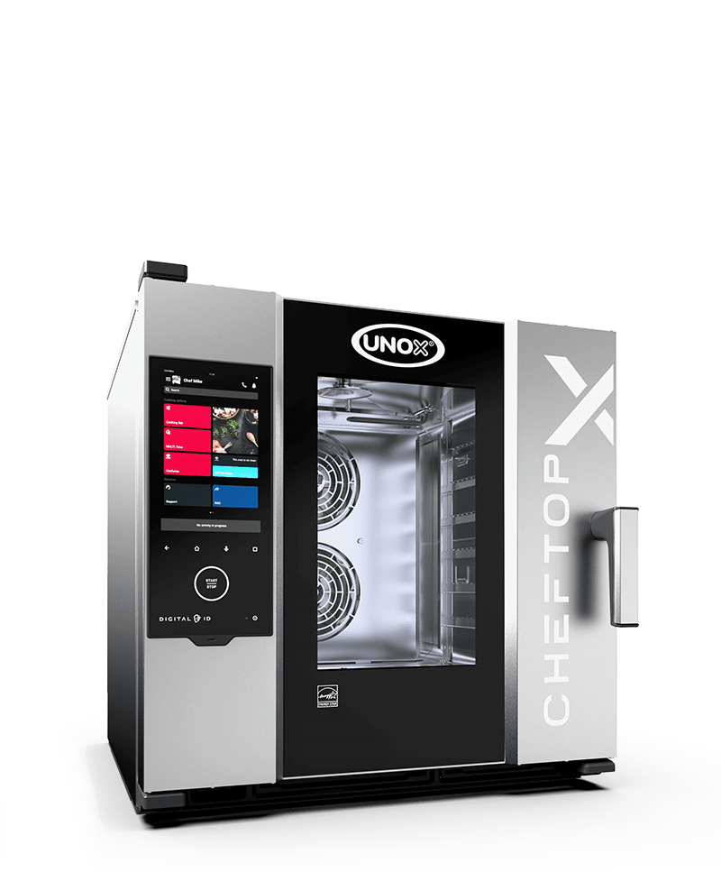
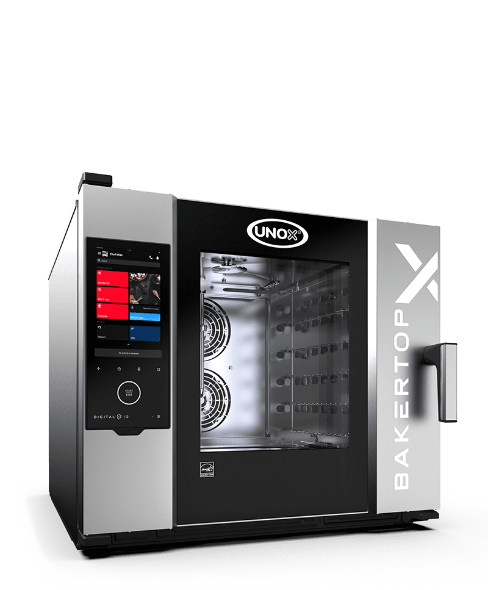
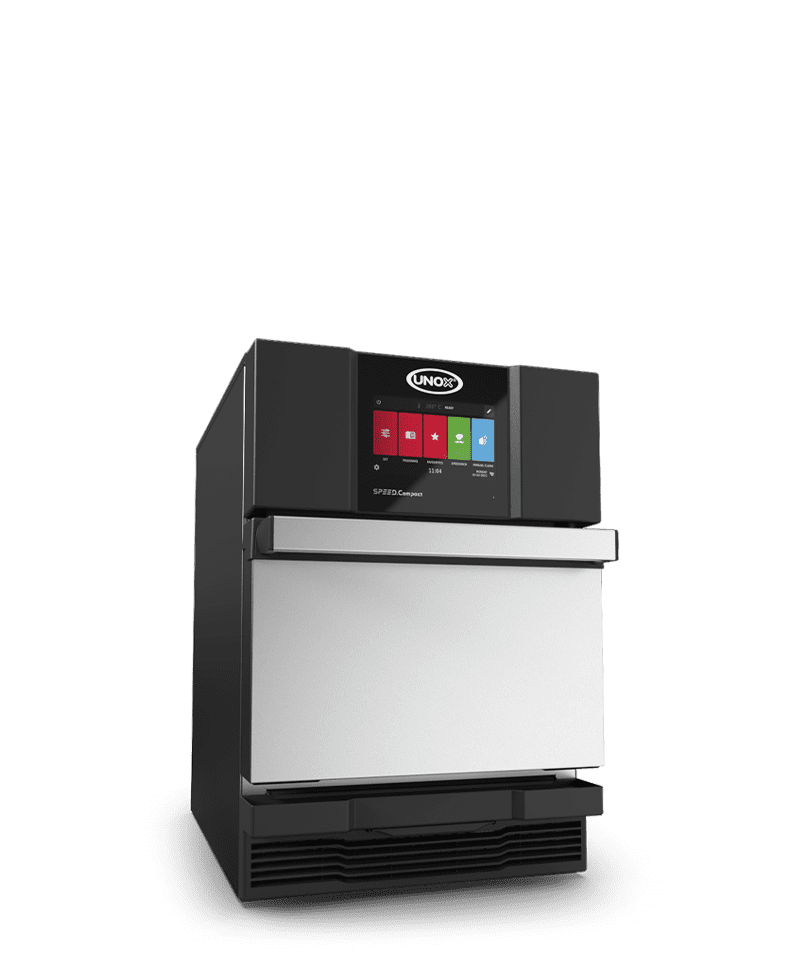
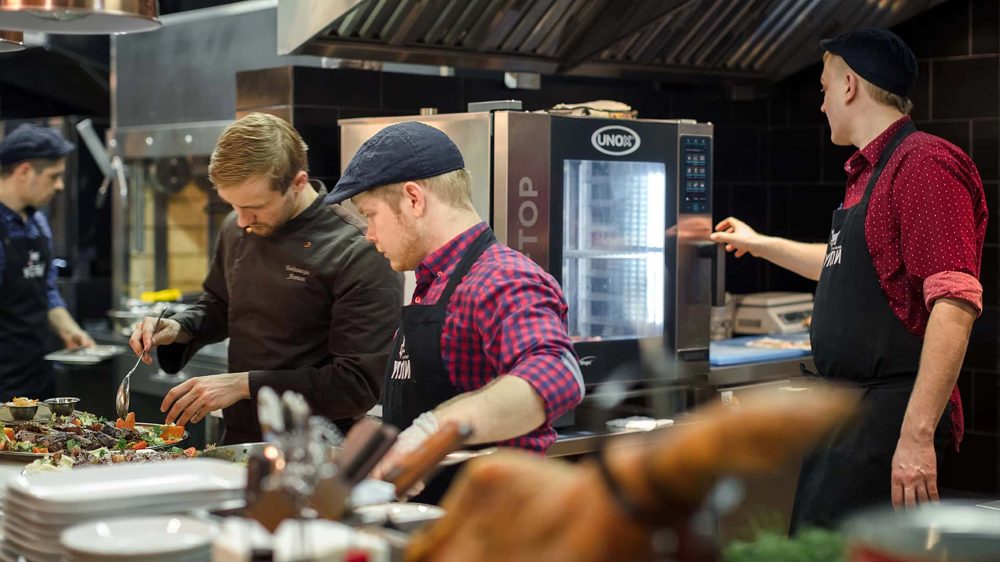
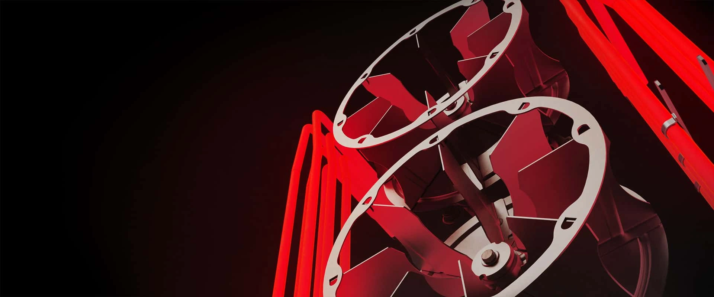
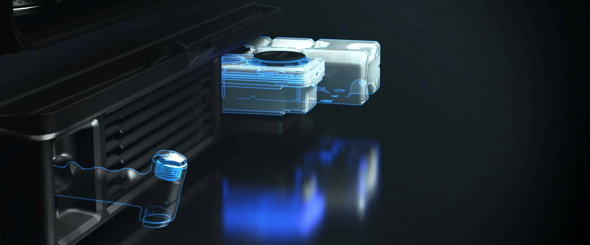

DEL HORNO AL PLATO
El vídeo no está disponible. Puedes seguir explorando las imágenes.
El acabado empieza aquí.



El vídeo no está disponible. Puedes seguir explorando las imágenes.
El vídeo no está disponible. Puedes seguir explorando las imágenes.
El vídeo no está disponible. Puedes seguir explorando las imágenes.



Te ayudamos a elegir el horno para tu cocina.
615 619 104